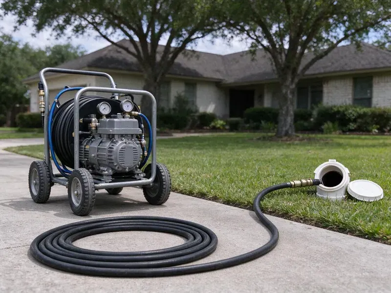

Hydro Jetting in Sheboygan, WI
When your drains are badly blocked in Sheboygan, WI, hydro jetting from HKV Plumbing provides a deep clean, restoring full flow and preventing future issues.
- Removes Tough Buildup
- Residential and Commercial Units
- Prevents Future Clogs
- High-Pressure Cleaning

Restore Full Pipe Flow With Professional Hydro Jetting in Sheboygan, WI.
Call for a quote and we will inspect the line first to set the right pressure and nozzle.
High-Pressure Hydro Jetting in Sheboygan, WI That Cleans the Whole Pipe
HKV Plumbing uses hydro jetting to clean drain and sewer pipes with water at pressures commonly in the 3,000 to 4,000 PSI range for residential work. Purpose-built nozzles push rear-facing jets that scrub the pipe wall while pulling the hose forward.
Our expertise includes:
- Pre and post jetting video inspection with recordings
- Preventative maintenance hydro jetting for businesses
- Cart and trailer jetters for homes and commercial lines

Additional Drain Services Services in Sheboygan, WI
From stubborn kitchen clogs to main sewer backups, our drain services in Sheboygan, WI restore full flow fast and keep it that way.


Customers
Why Choose HKV Plumbing for Hydro Jetting in Sheboygan, WI?
This service helps maintain the long-term health of your plumbing system by removing buildup that contributes to repeated drain issues and potential pipe damage.
- Inspection First, We camera the line before jetting so pressure settings match the pipe condition.
- Tough Blockages, It effectively breaks apart grease, mineral scale, sludge, and even invasive tree roots that snaking cannot fully dislodge.
- Full-Wall Cleaning, Jetting scrubs the pipe circumference instead of leaving a thin channel through the clog.
Citywide Coverage
HKV Plumbing is proud to offer complete hydro jetting service across every neighborhood of Sheboygan. From older districts with aging pipes to newer developments, we understand the plumbing challenges faced by residents here.
Experienced Team
Hydro jetting takes skill to do safely. Our crew knows how to feed hose through bends, avoid blowback at fixtures and work around older pipe that needs a gentler touch.
Safety-First Approach
Safety is a priority in all our hydro jetting work. We follow all local Sheboygan, WI plumbing codes and industry best practices to protect your property and our crew.
Trusted Certified Sheboygan Plumbing Services Professionals
At HKV Plumbing, we take pride in providing certified plumbing services throughout Sheboygan, WI. Backed by recognized industry credentials, our experienced plumbers combine technical skill with genuine customer care. Whether it is repair, installation, or maintenance, we follow strict safety and quality standards to deliver lasting results you can trust.
Call Us Now PHCC Plumbing Contractor Recognition
PHCC Plumbing Contractor Recognition Better Business Bureau (BBB) Accreditation
Better Business Bureau (BBB) Accreditation Angi Certified Pro
Angi Certified Pro ISO 9001 Quality Management Certification
ISO 9001 Quality Management CertificationProfessional Hydro Jetting Services in Sheboygan, WI
Main Sewer Line Hydro Jetting in Sheboygan
The main sewer line is the backbone of your plumbing system, and clogs here can affect all your drains. In Sheboygan, main sewer lines are often susceptible to tree root intrusion, especially from large mature trees planted near the line. Hydro jetting is very effective at cutting through and flushing out these roots, as well as clearing significant blockages caused by built-up waste. We use powerful jetting equipment to thoroughly clean the entire length of your main sewer line, for free flow to the municipal sewer system.

Hydro Jetting for Hard Water Scale in Sheboygan
Hard water is common across much of Wisconsin, especially where supply comes from groundwater moving through limestone and dolomite. Even moderate mineral content can lead to scale buildup in pipes over many years. This scale can restrict flow and trap other debris, leading to clogs. Hydro jetting is very effective at breaking down and flushing out these hard mineral deposits, restoring the full diameter of your pipes. This is a superior method compared to chemical treatments for scale removal.
Preventative Maintenance Hydro Jetting in Sheboygan, WI
Proactive hydro jetting can save Sheboygan, WI property owners from unexpected plumbing emergencies. For homes and businesses with a history of drain issues or those prone to specific types of buildup, scheduled hydro jetting is an excellent preventative measure. By regularly removing scale, grease, and other debris before they cause a full blockage, you can extend the life of your pipes, avoid costly repairs, and maintain consistent drainage. We can set up a custom maintenance schedule for your needs.
Hydro Jetting vs. Snaking Cost Comparison in Sheboygan, WI
While snaking might be cheaper upfront for simple clogs, hydro jetting offers a more thorough and long-lasting solution, often saving money in the long run for Sheboygan, WI residents. Snaking typically punches a hole through a blockage, leaving residue behind, which can lead to recurring clogs. Hydro jetting cleans the entire pipe, preventing future issues and reducing the frequency of service calls, making it a more cost-effective choice for persistent drain problems.
Hydro Jetting Before Pipe Lining in Sheboygan, WI
Cured-in-place pipe lining needs a clean surface to adhere and seal correctly. We jet the host pipe to remove roots, scale and debris, then camera it to confirm it is ready. Any heavy obstructions are cut out before the liner is installed. Skipping this step can lead to wrinkles or poor bonding. Proper prep is part of why lined pipe can last for decades.
High-Pressure Water Jetting for Drain Cleaning in Sheboygan
High-pressure water jetting, or hydro jetting, is a non-invasive method that uses highly pressurized water to clear and clean pipes. Our equipment in Sheboygan can generate water pressures up to 4,000 PSI, powerful enough to break apart stubborn blockages and scour pipe walls clean without chemicals. This method is effective for many pipe materials, from PVC to cast iron, and is an environmentally friendly choice for deep drain cleaning.
Emergency Hydro Jetting in Sheboygan, WI
A completely backed-up drain or sewer line requires immediate attention. HKV Plumbing offers emergency hydro jetting across Sheboygan, WI, to address critical blockages quickly. Our technicians are available to respond promptly, minimizing water damage and restoring your plumbing as soon as possible. We understand that some clogs just can't wait.

Kitchen Line Grease Jetting in Sheboygan, WI
Kitchen drains are the most common grease trouble spot in any home or restaurant. Grease clings to pipe walls and hardens, especially where the line runs flat under a slab. Jetting melts and scrubs this buildup away instead of just poking a hole through it. We use smaller hose and nozzles sized for 1-1/2 and 2 inch kitchen lines. This keeps your sink and dishwasher draining properly for much longer.
Hydro Jetting Near Me in Sheboygan, WI
Our team lives and works right here in Sheboygan, giving us a real understanding of local plumbing challenges, from tree root intrusion to local soil conditions. We are committed to giving our neighbors the most effective and durable hydro jetting available, with your satisfaction on every service call.
If you are searching for hydro jetting near me in Sheboygan, WI, look no further than HKV Plumbing. Our local team is based to provide prompt and efficient service throughout the metro area. We understand the plumbing challenges of Wisconsin homes and businesses and are ready to tackle your toughest drain issues.
HKV Plumbing at a Glance
- Fully licensed plumbing team covering Sheboygan, WI
- 24/7 emergency service with same-day scheduling
- Upfront, flat-rate pricing before work begins
- 4.8-star rated by 448+ Wisconsin customers
Sheboygan Map
Sheboygan Information
- Population
- 49,686
- Area codes
- 920/414/262
- Service area
- Sheboygan and communities within 40 miles
- Nearby
- Oshkosh, Milwaukee, Wauwatosa, Appleton
Hydro jetting is particularly useful for homes in Sheboygan, WI, where shifting soil can stress and crack pipes, allowing root intrusion, and mineral buildup can narrow drain lines over time. Glacial soils in Wisconsin range from heavy clay to sand and gravel, which affects how water moves around foundations and buried lines.
Expert Services
Trust our professionals for reliable HKV Plumbing solutions in Sheboygan, WI.
Our Specialized Plumbing Services in Sheboygan, WI
At HKV Plumbing, we provide a complete range of plumbing services across Sheboygan, WI. From leak detection to full system installations, our team ensures fast, precise, and affordable service for both residential and commercial properties. Explore our core services below:


Here Is How Our Hydro Jetting Process Works in Sheboygan, WI
Our hydro jetting process is complete and designed for maximum effectiveness while protecting your plumbing system.
Request a Quote
Call (414) 432-4641 and tell us about the clogs you are having and how often. We schedule an inspection and give you a ballpark price.
Inspect the Pipe
We run a camera to check pipe material, condition and the cause of the blockage. This tells us the safe pressure and the right nozzle.
Jet and Verify
We jet the line in passes until the walls are clean and the water runs clear. A final camera run confirms the result.
Frequently Asked Questions About Hydro Jetting in Sheboygan
The cost of hydro jetting in Sheboygan, WI can range from $300 to $800, depending on the severity of the clog, the length and diameter of the pipe, and whether camera inspection is required. More complex jobs, like removing extensive tree roots or cleaning long commercial lines, may be on the higher end. We provide a written estimate after assessing your situation.
Hydro jetting is exceptionally effective against almost all types of clogs. It can break through solid obstructions like tree roots, flush out heavy grease and food buildup, clear mineral scale, and remove compacted sludge and debris that traditional snaking often leaves behind.
Snaking uses a rotating cable to break through a clog. Jetting uses pressurized water to clean the entire pipe wall and flush debris away.
Most residential jobs take 1 to 3 hours including inspection. Long commercial lines or heavy grease can take longer.
While small, low-pressure drain jetters are available for rent, professional hydro jetting equipment is far more powerful and requires training to operate safely and effectively. Improper use can damage pipes, cause injury, or fail to clear the blockage. For severe clogs, it is always best to rely on experienced professionals like HKV Plumbing.
A thorough jetting often keeps a line clear for a year or more, depending on use and roots. Lines with heavy root intrusion may need maintenance or a repair.
For most modern and well-maintained pipes, hydro jetting is very safe. However, for very old, corroded, or severely damaged pipes, the high pressure could cause further damage. That is why HKV Plumbing always performs a camera inspection first to check your pipe's condition and confirm hydro jetting is appropriate.
HKV Plumbing uses professional-grade hydro jetting equipment from established manufacturers like Spartan Tool and MyTana. These brands are known for their reliability, powerful performance, and safety features, so we can deliver the most thorough cleaning for your pipes.
What People Are Saying About Our Plumbing Experts?

Daniel K.
A pipe burst at 11 pm and they actually answered. The plumber showed up within the hour, shut everything down, and had us back to normal the next morning. Could not ask for more.
Emergency Plumbing · Green Bay, WI
Mark T.
When our office needed drain cleaning, HKV Plumbing provided quick, reliable service. The plumber arrived on time and made sure every drain flowed perfectly before leaving. Very satisfied.
Drain Cleaning · Sheboygan, WI
Sofia M.
Two new toilets installed in one visit, no mess left behind, and the tech even adjusted a faucet he noticed was dripping. Fair pricing and really friendly.
Toilet Installation · West Allis, WILaura S.
I scheduled a water heater replacement, and the team made the process smooth and affordable. The new unit works perfectly, and they cleaned up after completing the job.
Water Heater Replacement · Wauwatosa, WI
Robert G.
The trenchless sewer replacement saved our front yard. They walked us through the camera inspection footage first so we knew exactly what we were paying for.
Sewer Line Replacement · Wauwatosa, WIJames P.
Our commercial plumbing system had a leak under the sink, and HKV Plumbing handled it professionally. The plumbers arrived quickly and restored everything without disruption to our customers.
Commercial Plumbing · West Allis, WI